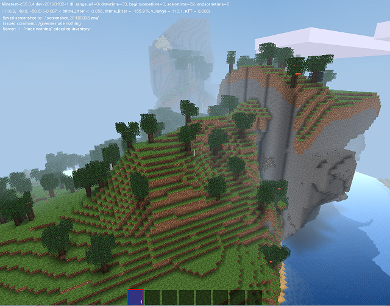
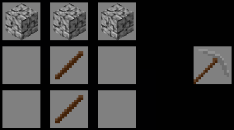
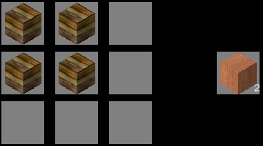

CONTENTS
The Basics
Part One: Declaring and Crafting Nodes
Part Two: ABMs
- Chapter 4 - ABM Basics and the Position Variable
- more comming soon
Part Three: Lua Files and Debuging
The Basics
|

|
Minetest-c55 is a Minecraft clone, developed by the Finnish programmer 'celeron55' and contributors.
Minetest has a ScriptAPI (Applictation Programming Interface), which is used to program Mods (Modifications) for the game, extending its features and adding new items.
This ScriptAPI is accessed using an easy-to-use programming langauge called Lua.
Requirements
- Basic Programming Knowledge, ideally in the Lua Language (learn)
|
Types of objects in Minetest
Here are the three types of items you can define in Minetest:
- Node (register_node): A Block from the world
- Tool (register_tool): A tool/weapon that can dig and damage things according to tool_capabilities
- Craftitem (register_craftitem): A miscellaneous item
The type of the object is important as it plays a part in the properties of that object.
Mod packs and item names
In minetest, each node, tool and item needs a unique name to identify it in the api.
The name's format is like this:
modname:itemname
In this case, the mod is called 'modname' (name is preset by the folder name)
and the block is called 'itemname', so it's tutorial:decowood.
so for example, default:dirt is the unique name for dirt.
Creating a mod
1) Create a new folder with the name of your mod in the mod folder
Linux Systemwide: ~/.minetest*/usermods/
Windows + Linux Run-in-place: minetest*/mods/minetest
|
|
minetest* The place where minetest was installed/extracted to.
|
2) In the new folder, create a file called 'init.lua'. This is the file that will contain the source code for the mod.
To do this on Windows, use WordPad.
Click file>save as, dropdown to all files, and type 'init.lua' in the file name box.
Or you can use a lua compatible editor, a few examples: 'Context', 'luaedit', 'Geany (linux)', 'Bluefish (linux)'
|
|
WARNING: DO NOT USE NOTEPAD
|
|---|
3) Next make another sub folder called 'textures'. This is where you will place the textures
Part One: Declaring and Crafting Nodes
We are going to make a mod that adds a special kind of wood that can only be used for decoration.
For this, create a new mod called 'tutorial' using the method described in Chapter 0.
Registering the decowood node
1) copy-paste this into 'init.lua':
minetest.register_node("tutorial:decowood", {
tile_images = {"tutorial_decowood.png"},
groups={choppy},
})
2) Copy the file 'tutorial_decowood.png' supplied with this Document to the textures folder in the mod.
Try it) Launch the game now, and notice that the mods are automatically loaded and compiled. This means when changing the code you simply have to 'Exit to Menu' and 'Start Game/Connect' again to try out the changes.
Let's try out our first mod! Open the chat window ingame (press t) and enter "/giveme tutorial:decowood 99" (Without "" of course). This will add 99 blocks of the decorative wood to your inventory!
The "give" privilage is required for the /giveme command to work
To grant yourself the "give" privilage, go to worlds/gamename/auth.txt and open it.
Add ",give" after "shout,interact" to make it "shout,interact,give"
|
Let's have a look at the source code:
The function minetest.register_node(name, table) is responsible for adding new blocks to the game (node=block, but also torches, rails, ...)
It takes 2 Parameters: The name of the new block ("tutorial:decowood", the string before : MUST be the name of the mod folder) and a table with several properties of the block.
In this case we use 2 properties:
- tile_images: Sets the texture of the block; You can use only 1 texture or multiple textures,
seperated by commas {"tex1.png", "tex2.png", ...}. The game checks for the texture files in ALL textures folders of the game.
- group: This sets the time it takes to destroy the block, and the tool required See more
What is crafting?
Crafting does not only play an important role in Minecraft, Minetest also uses different crafting recipes. Therefore it is important to know what crafting means and how to code it!
Crafting means to creating Tools, Blocks and Other Objects.
In minetest you have a 3x3 crafting area by default with a 1x1 output field.
For example, a stone pickaxe can be made out of 2 Sticks and 3 Cobblestones:

S=Stick C=Cobblestone; Looks quite logic, doesn't it?
Lets make a recipe for our decowood mod
So let's make a crafting recipe for the decorative wood of Chapter 0!
Just append (add) this to your init.lua file:
minetest.register_craft({
output = '"tutorial:decowood" 2',
recipe = {
{'default:wood', 'default:wood', ''},
{'default:wood', 'default:wood', ''},
{'', '', ''},
}
})
The function minetest.register_craft() registers a crafting process, it defines the recipe for something.
It takes 1 parameter which is a table that contains 2 properties: (and an optional third)
- output - which sets the outcome of the crafting process and recipe which is the actual recipe for the output.
- recipe must be a table with other tables inside.
Every of the 3 tables defines another row of the crafting field. Every row contains 3 columns.
In this case The crafting recipe is like this:

- [optional] type - if you want to make it a furnace craft add type="cook" before the "output" property
Easy, isn't it? You may also try out some other combinations!
What is the mod "default"?
So what is default? 'default' is the most important "mod" of minetest, in fact minetest itself is more like just a game engine,
all the contents, materials, and other stuff are in several mods, like 'default' (standard tools/blocks), 'bucket' (Buckets: Lava/Water),...
If you want to find out more about these mods and maybe use features they contain, just have a look in their init.lua!
For Windows & Linux run-in-place these mods are in minetest/games/minetest_game/
For Linux systemwide installation, these mods are in /usr/share/minetest/games/minetest_game
|
ABMs stands for "Active Block Modifiers" and they add actions to blocks. For instance, the tutorial-wood could become normal wood after a few seconds.
Append this code to your init.lua:
minetest.register_abm(
{nodenames = {"tutorial:decowood"},
interval = 30,
chance = 1,
action = function(pos)
minetest.env:add_node(pos, {name="default:wood"})
end,
})
Try it out! It's really annoying to see all your decowood creations destroyed after 30 seconds, they simply become normal wood.
But how does this work?
The function minetest.register_abm registers an action for each block of the same type.
nodenames = {"tutorial:decowood'} means that the action is processed for each decowood block.
You could also try "default:stone" instead of that to turn all stone blocks into wood.
interval = 30 means that the action is performed every 30 seconds. It starts counting at the beginning of the game. After 30 seconds all actions are processed, it doesn't matter when the block was placed.
This is not a per-block timer!
chance = 1 means that the probability of the action is 1:1, it happens in every case.
A higher value means that it's less probable.
action = function(pos) is the function that is actually performed.
It contains the command minetest.env:add_node. More about it in the next section
minetest.env:add_node
This is a function that is used to add/replace a node the given place
minetest.env:add_node has 2 parameters.
- The position parameter (more information later)
- A table which defines the properties of the block, e.g. the name, the direction it faces, ...
In this case the name is enough to define what block you can see.
So let's assume we want to create a mod that makes junglegrass grow above every dirt-with-grass block. This should be a slow process, one dirt-with-grass block after the other should be grown over.
This is what we do:
minetest.register_abm(
{nodenames = {"default:dirt_with_grass"},
interval = 1,
chance = 100,
action = function(pos)
pos.y=pos.y+1
minetest.env:add_node(pos, {name="default:junglegrass"})
end,
})
You should already know everything else but the line "pos.y=pos.y+1".
The Position Variable
To understand the position variable, you need to know that in 3d space, positions are determind by three co-ordinates: x,y,z
The player usually spawns near 0,0,0.
The line pos.y=pos.y+1 manipulates the position to 1 Block above the dirt-with-grass node.
There are some small other differences to our first abm.
The interval is 1 in this case, but the chance (probability) is 100.Therefore the function is executed every second, but only in 1 of 100 cases.
This makes your minetest garden slowly been overgrown by junglegrass.
Part Three - Lua Files and Debugging
The dofile function
Sometimes you have so much code, a single init.lua file is too hard to maintain.
But there is a solution! dofile(minetest.get_modpath("tutorial").."/anotherfile.lua") will tell Minetest to look for anotherfile.lua in the same folder as init.lua, and load its contents.
Types of errors and Bugs
As with most programming, when you develop you tend to get what are called "bugs" and errors, which are basically human mistakes.
There are three types of bugs/errors
- Compile Time Errors - These occur when Minetest is loading the mods, and are caused by syntax errors (a simple mistake like leaving a "}" out)
- Runtime Errors - These occur while the game is being played, and often crash the game. (eg: mod "modname:blockname" is not defined)
- Runtime Bugs - These bugs cause the mod not to work as planned
Avoiding Syntax Mistakes
To help avoid syntax mistakes, make sure your code is easy to read.
|
Which one of these codes is easier to read?
minetest.register_abm(
{nodenames = {"default:dirt_with_grass"},
interval = 1,
chance = 100,
action = function(pos)
pos.y=pos.y+1
minetest.env:add_node(pos, {name="default:junglegrass"})
end,
})
minetest.register_abm({nodenames = {"default:dirt_with_grass"},interval = 1,chance = 100,
action = function(pos)
pos.y=pos.y+1
minetest.env:add_node(pos, {name="default:junglegrass"})
end,
})
|
Also you should check your work and put comments in
pos.y=pos.y+1 --This line increases the position's y axis by 1
Avoiding Runtime Mistakes
The Console is the black window with writing in that appears when Minetest runs.
|
LUA has a function called "print" and it displays a message to the console.
print("message to send")
You should the print function so you know how far Minetest gets in a program.
| Why use print |
|---|
|
For example, you have a mistake in the code:
check_something(1)
function check_something(value)
if value=0 then
print("it ends up here")
else
print("but you are certern that value=1")
end
end
The aboves Runtime bug was caused by a single "=" instead of double "==", and so instead of checking if value was equal to 0, it set it to 0 resulting in true
And so having print helps point out your mistake.
|
Apendix
Don't have any knowledge? Use the following to learn:
- Codecademy -Learn the basics of programming (it is Javascript (not Java) but still helps)
- Internet Search (google,yahoo) lua tutorials
Credits and Afterword
This is Jeija's modding tutorial Version 20120823,
Updated, Rewriten and Reformated for english by "Rubenwardy".
Html coded by Rubenwardy.
Check for new version at GitHub.
See InfinityProject's Moddinghelper
For more advanced (and often cryptic) information about minetest modding have a look at this reference:
Lua_api.txt
For generic modding questions or specific questions, feel free to ask in the minetest forum:
minetest.net/forum
For questions about this tutorial, ask in the thread for this tutorial:
minetest.net/forum/...
Thanks you for reading! Good luck in creating your amazing dream mod!